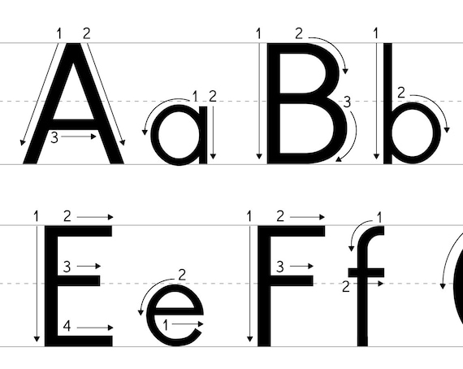
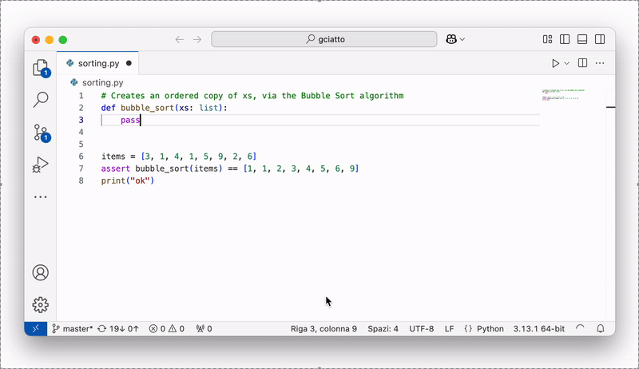

A cosa ci serve l’Intelligenza Arificiale?
(versione presentazione: 2025-09-08)
Giovanni Ciatto, Dipartimento di Informatica — Scienza e Ingegneria (DISI), Sede di Cesena,
Alma Mater Studiorum—Università di Bologna

Immagine generata con IA (notare l'errore "di battitura")
Link a queste slide
Scaletta
Cosa (non) è l’IA?
https://duckduckgo.com/?t=h_&q=intelligenza+artificiale&iax=images&ia=images

(sembrerebbe trattarsi di robot umanoidi)
Sfatiamo alcuni miti
-
L’IA non è una cosa sola
- ci sono varie cose che vengono chiamate IA, molto diverse tra loro
-
Non ci sono (solo / ancora) robot umanoidi senzienti che si comportano come le persone
- l’IA è spesso invisibile, e non sempre ha bisogno di un corpo
- es. google translate
- es. filtri instagram
- es. NPC dei videogiochi
- l’IA è spesso invisibile, e non sempre ha bisogno di un corpo
-
L’IA non è magica né onnipotente
- molta matematica, molta statistica, molta informatica
- spesso è molto limitata, e può fare solo quello per cui è stata progettata
C’è chi fa ricerca sui robot, anche umanoidi, ma ben che vada sanno fare azioni specifiche:

Cos’è l’intelligenza umana?
Domanda difficile, la risposta dipende molto dal contesto
Esistono vari tipi di intelligenza logico-matematica, verbale-linguistica, emotiva, corporeo-cinestetica, …
Più facile definire per esempi:
- intelligenza come capacità di apprendere (dall’esempio, dall’errore, …)
- capacità di adattamento (applicare conoscenze a situazioni nuove)
- Teoria della Mente: capacità di comprendere e interpretare i comportamenti e pensieri degli altri
- Senso comune: conoscenza di base su come funziona il mondo fisico (es. “se tocco il fuoco mi scotto”)
Intelligenza vs. Autonomia
Altra caratteristica degli esseri umani:
autonomia $\approx$ le persone possono fare ciò che vogliono
“Fare ciò che si vuole” $\approx$ “avere capacità di scelta”
- autonomia motivazionale $\rightarrow$ scelgo che obiettivi pormi
- es. “voglio comprare l’ultimo gioco di Zelda”
- autonomia esecutiva $\rightarrow$ scelgo come raggiungere gli obiettivi
- es. “voglio andare al GameStop” vs. “voglio comprare sul Nintendo Store”
Intelligenza e autonomia sono intrecciate:
per scegliere e agire efficacemente servono molti aspetti dell’intelligenza
Cos’è l’intelligenza artificiale?
Una macchina (un computer) che è in grado di:
-
emulare una o più abilità tipiche dell’intelligenza umana
- anche abilità scontate per un umano, come riconoscere le cose del mondo fisico
- rappresentazione del mondo
- anche abilità scontate per un umano, come riconoscere le cose del mondo fisico
-
raggiungere un qualche grado di autonomia
- va già bene fermarsi all’autonomia esecutiva
Autonomia > Automazione
-
Automazione: una macchina che svolge la sua funzione senza (troppo) aver bisogno di intervento umano
- la macchina non sceglie cosa fare e come farlo
-
Autonomia: la macchina ha margine di scelta su cosa fare e/o come
Esempio:
- il condizionatore: è automatico
- alcuni robot aspirapolvere hanno margine di autonomia esecutiva
Diversi livelli di IA
-
Artificial narrow intelligence (ANI, IA ristretta): macchine con un compito preciso che svolgono emulando qualche abilità umana
- noi siamo qui!
-
Artificial general intelligence (AGI, IA generale): macchine con un grado di intelligenza ed autonomia comparabili a quelle umane
- lavori in corso, ETA: decenni o secoli
-
Artificial super intelligence (ASI, IA superiore): macchine con un grado di intelligenza ed autonomia superiori a quelle umane
- superiori a quelle di ogni essere umano? o della collettività umana?
AGI — Artificial General Intelligence
Intelligenti come un essere umano
Esempi di AGI nella cinematografia (pt. 1)
Sonny di “Io Robot”

- corpo umanoide con sembianze robotiche
- iper-razionale
- dotato di “libero-arbitrio”
- si riscopre emotivo nell’arco narrativo
Esempi di AGI nella cinematografia (pt. 2)
Dolores Abernathy di “Westworld”

- corpo umanoide con sembianze umane
- iper-emotiva
- guadagna autocoscienza e quindi libero arbitrio nell’arco narrativo
- maturando, attraversa vari stadi emotivi: vendicativa, compassionevole, etc.
- in Westworld, la coscienza sta in una piccola pallina nel cranio
- può essere trasferita in altri corpi, o copiata
Esempi di AGI nella cinematografia (pt. 3)
J.A.R.V.I.S. di IronMan

- nessun corpo: è un’entità virtuale
- iper-razionale
- inizialmente un mero assistente, fa poi delle scelte autonome che impattano la trama
- accesso completo a Internet
- capacità di guadagnare il controllo di altre macchine
ASI — Artificial Super Intelligence
Più intelligente degli esseri umani
Esempi di ASI nella cinematografia (pt. 1)
Skynet di Terminator

- nessun corpo: è un’entità virtuale
- iper-razionale
- quando raggiunge la auto-consapevolezza
- decide che gli umani sono una minaccia
- scatena un olocausto nucleare come attacco preventivo
- capacità di ottenere il controllo di altre macchine
Esempi di ASI nella cinematografia (pt. 2)
L’IA di Matrix (da non confondersi col solo Mr. Smith)

- non si capisce se IA sono un’entità collettiva o tante entità invididuali
- le IA si sono ribellate agli umani:
- gli umani hanno oscurato il cielo per togliere energia alle macchine
- le macchine hanno iniziato ad attingere energia dagli umani coltivati
- le macchine hanno la capacità di costruirsi e (ri)progettarsi da sole
Esempi di ASI nella cinematografia (pt. 3)
Rehoboam di Westworld 3

- un supercomputer di dimensione sferica
- accesso ai dati personali di tutte le persone, e non solo
- iper-razionale
- capace di prevedere il prevedere il futuro degli individui e della società
- capace si simulare scenari e prendere decisioni per evitare quelli negativi
Esempi di ASI nella cinematografia (pt. 4)
“Il direttore” di Travelers

- un computer quantistico, di forma cilindrica
- accesso ai dati disponibili in rete
- capace di simulare scenari alternativi nel passato, e il loro impatto sul presente
ANI — Artificial Narrow Intelligence
Intelligente (veloce) ma senza autonomia
Esempi di ANI dalla vita reale (pt. 1)
Traduzione automatica di testo — Es. Google Translate

- include anche Text-to-Speech (generazione di audio “parlato” da testo)
Esempi di ANI dalla vita reale (pt. 2)
Traduzione automatica di immagini — Es. Google Translate

- include capacità di riconoscimento e localizzazione di testo in immagini
- include capacità di traduzione di testo in immagini
- include capacità di disporre il testo tradotto in modo simile all’originale
Esempi di ANI dalla vita reale (pt. 3)
“Filtri” dei social network — Es. Instagram

- include capacità di riconoscere la posa e l’orientamento del viso
- include capacità di modificare immagini predefinite e orientarle rispetto al viso
Esempi di ANI dalla vita reale (pt. 4)
Riconoscimento di immagini — Es. analisi del traffico


- include capacità di riconoscere e localizzare oggetti in immagini
- sembra una IA “unica”, ma in realtà ogni IA è specializzata su un gruppo di oggetti
- utile per analisi del traffico, monitoraggio di eventi, etc.
Esempi di ANI dalla vita reale (pt. 5)
Riconoscimento di immagini — Es. autenticazione con volto
- diverso dalla precedente: bisogna distringuere un volto dagli altri
- più complesso del semplice trovare un volto in una foto
- utile per autenticazione e controllo accessi
- in realtà relativamente insicuro per questo scopo
Esempi di ANI dalla vita reale (pt. 6)
Riconoscimento di immagini — Es. di impronte digitali

- riconosce solo impronte digitali, e le distingue tra loro
- sapendo che l’immagine è un’impronta, si può aumentare la precisione del riconoscimento, sfruttando le minuzione tipiche
- utile per autenticazione e controllo accessi
- più sicuro del riconoscimento facciale, meno della password
Esempi di ANI dalla vita reale (pt. 7)
Riconoscimento di immagini — Es. di caratteri scritti a mano
- molto difficile riconoscere intero testo scritto a mano
- più facile riconoscere singoli caratteri
- utile per automazione di operazioni postali, o di elaborazione di moduli standardizzati
Esempi di ANI dalla vita reale (pt. 8)
Calcolo di percorsi — Es. Google Maps

- attività molto consolidata, ma è tra i primi esempi di IA nei libri di testo
- include capacità di calcolare il percorso migliore tra due punti
- magari considerando traffico, pedaggi, etc.
Esempi di ANI dalla vita reale (pt. 9)
Calcolo di percorsi — Es. Movimento dei personaggi nei videogiochi

- utile per far muovere i personaggi dei videogiochi in modo realistico verso una destinazione
- l’idea di fondo, è la stessa di Google Maps, ma in uno spazio diverso
Esempi di ANI dalla vita reale (pt. 10)
Riconoscimento di suoni — Es. Shazam

- riconosce canzoni e brani musicali da brevi estratti audio
Esempi di ANI dalla vita reale (pt. 11)
Riconoscimento di suoni — Es. Speech-to-Text (STT), Riconoscimento del parlato

- converte parlato in testo scritto e digitalizzato
- utile in combinazione TTS (Text-to-Speech) per creare assistenti vocali
Cosa hanno in comune questi esempi?
Automazione $\approx$ si ottiene un servizio senza bisogno di intervento umano
Vantaggi diretti:
- velocità: le macchine sono più rapide degli umani nella maggior parte dei casi
- costo: le macchine non fanno fatica, non si stancano, non hanno bisogno di stipendio
- alcuni servizi di IA hanno un prezzo che copre costi di sviluppo/esercizio e profitto del fornitore
- precisione: su compiti ripetitivi, le macchine sono più precise degli umani
- in generale, l’errore è controllabile $\implies$ compromesso tra precisione e velocità
- disponibilità: le macchine non hanno orari d’ufficio, non si ammalano, non vanno in ferie
- riproducibilità: una volta compreso come automatizzare una attività, tutti possono beneficiarne
Vantaggi indiretti:
- le macchine abbattono tempi e costi di fruizione dei servizi che automatizzano
- es. una volta per tradurre un documento serviva un traduttore umano
- migliorano le nostre vite in tante piccole cose
- es. non serve più conoscere i nomi delle vie, basta “condividere la posizione”
- ci sollevano da attività lavorative monotone e ripetitive
IA vs. Informatica
-
Questi vantaggi sono veri per qualunque avanzamento tecnico comporti automazione
-
Molte tecnologie informatiche introducono automazione senza IA
-
Esempi:
- Social networks e app di messaggistica: automatizzano, velocizzano, e rendono asincrona la comunicazione tra persone
- Ebay, Amazon, e altri Negozi On-line: automatizzano e velocizzano la compravendita di beni
- Netflix, Prime Video, e altri servizi di Entertainement Online: rendono la fruizione di audiovisi automatica e personalizzata
- YouTube, Vimeo, e altri servizi di Video Sharing: automatizzano la pubblicazione di audiovisivi
- Uber, Lime, e altri servizi di Car Sharing: incrociano domanda e offerta di servizi di mobilità, automaticamente
- etc.
In realtà l’IA può essere applicata in questi ambiti, ma solo per efficientizzare il servizio
Cos’è l’informatica?

-
Il computer transforma dati di input in dati di output
- dati $\approx$ informazioni interessanti e digitali
- es. input:
partenza=Cesena, destinazione=Bologna - es. output: percorso stradale più veloce
-
Durante la trasformazione, il computer potrebbe:
- memorizzare informazioni / recuperarne di memorizzate
- interagire sulla rete con altri computer o persone
-
Come fa a sapere cosa fare?
- il computer esegue un programma
- $\approx$ ricetta, lista di istruzioni, per eseguire una trasformazione
- il computer esegue un programma
-
Ogni trasformazione input—output risolve un problema interessante
- es. calcolo del percorso
- es. visualizzazione di una pagina Web
- es. riproduzione di un video
-
I programmi sono scritti da persone esperte
- informatica studia come programmare problemi interessanti/ricorrenti
L’apprendimento automatico
-
Ci sono dei problemi per cui è difficile / impratico scrivere un programma
- es., in genere, il riconoscimento di immagini, audio
- es., es. il riconoscimento di scrittura “a mano”
-
È difficile dare istruzioni precise su come risolvere il problema
- perchè il problema stesso è impreciso per sua natura

Soluzione: scrivere un programma che possa imparare a migliorare il suo stesso funzionamento
- questa è la base dell’apprendimento automatico, una delle branche più importanti dell’IA come scienza
Osservazioni
-
Apprendere $\approx$ migliorare (non cambiare) il funzionamento di base di un programma
- se progettato per distinguere mele da pere, non imparerà mai (da solo) a riconoscere pesche
-
Le persone imparano da altre persone
- da chi o cosa apprendono le macchine?
Apprendimento da Esempi

-
Allenamento: gli umani forniscono molti esempi noti delle cose da riconoscere, la macchina impara da essi
- es. foto di vari animali e rispettivi nomi
-
Risultato: la macchina allenata sa riconoscere esempi anche mai visti prima
- es. nuova foto di un animale noto, la macchina dice il suo nome
- NB: la macchina non saprà comunque riconoscere nuovi tipi di animali
Apprendimento per Rinforzo

-
Allenamento: la macchina riceve un premio quando fa bene e una penalità quando fa male
- impara cosa è opportuno fare quando
- es. “per spegnere il fuoco, devo prima prendere l’acqua”
- impara cosa è opportuno fare quando
-
Risultato: la macchina sa cosa fare in situazioni simili a quelle dell’allenamento
- NB: funziona bene per operazioni dove le azioni e casistiche possibili sono limitate
- es. video-giochi, automazione industriale, etc.
- NB: funziona bene per operazioni dove le azioni e casistiche possibili sono limitate
IA Generativa
Verso l’IA Generativa
Alcuni grandi avanzamenti si sono verificati negli ultimi 10 anni
-
[~2010] Deep Learning (apprendimento profondo): ritorno in auge di tecniche basate su reti neurali
- maggiore flessibilità e potenza per apprendimento automatico volto al riconoscimento
- ispirate al funzionamento del cervello umano

Verso l’IA Generativa
Alcuni grandi avanzamenti si sono verificati negli ultimi 10 anni
- [~2015] Generative Adversarial Networks (GAN, reti generative avversarie): capacità di generare contenuti realistici
(esempio di GAN che genera volti umani realistici)
Verso l’IA Generativa
Alcuni grandi avanzamenti si sono verificati negli ultimi 10 anni
- [~2015] sempre relativamente alle GAN: capacità di variare lo stile di un contenuto
- es. implica capacità di apprendere lo stile di un’immagine e applicarlo ad un’altra
- NB: il concetto di stile NON è esplicitamente definito, è una cosa intuitiva che le GAN imparano a riconoscere e riprodurre

(esempio di GAN che applica stili artistici diversi ad una stessa immagine)
Verso l’IA Generativa
Alcuni grandi avanzamenti si sono verificati negli ultimi 10 anni
- [~2015] sempre relativamente alle GAN: capacità di modificare un contenuto sull’esempio di un altro
- es. riprodurre la posa di un volto con un altro volto
- NB: di nuovo, si evita di dover definire cosa sia una posa, la macchina impara da sola
- es. deep-fakes: https://www.youtube.com/watch?v=koYcqsebFDE
- es. riprodurre la posa di un volto con un altro volto

(esempio di GAN che modifica la posa di un volto)
Verso l’IA Generativa
Alcuni grandi avanzamenti si sono verificati negli ultimi 10 anni
- [~2020] Modelli fondazionali: grosse reti neurali che imparano ad elaborare, “capire”, e produrre contenuti
- contenuti $\approx$ testo, immagini, suoni, etc.
- allenati su grandi quantità di dati, e con grandi risorse computazionali, a fare un po’ tutto
- con l’idea di poterli poi specializzare per compiti specifici

Verso l’IA Generativa
Alcuni grandi avanzamenti si sono verificati negli ultimi 10 anni
- [2023] ChatGPT e altre tecnologie note come large language models (LLM) aperte al pubblico generale

Terminologia: Modelli Fondazionali vs. Large Language Models

GenAI con modello di consumo as-a-Service
GenAI con modello di consumo as-a-Service
-
Modelli di costo:
- ad abbonamento: si paga un canone fisso mensile/annuale per avere accesso al servizio
- spesso contiene comunque limiti di consumo
- a consumo: si paga in proporzione all’uso effettivo del servizio
- ad abbonamento: si paga un canone fisso mensile/annuale per avere accesso al servizio
-
Consumo è misurato in base allo sforzo computazionale necessario per servire la richiesta:
- token processati (per testo)
- quantità di richieste effettuate per unità di tempo (minto, ore, giorno, mese)
- dimensione dei dati processati (per immagini, audio, video)
- complessità dello specifico modello impiegato per per servire la richiesta
-
La generazione da considerarsi un processo stocastico, per costruzione
- La qualità del servizio è soggetta a casualità e a fluttuazioni dovute a:
- carico del servizio
- scelta del modello, e relativo aggiornamento
- limiti di servizio eventualumente raggiunti nel quanto di tempo corrente
- caso
Ciclo di apprendimento di GenAI

Ciclo di apprendimento di GenAI — Conseguenze (pt. 1)
-
Bias di campionamento: GenAI conosce solo ciò su cui è stato allenato + pia speranza che impari a generalizzare
-
L’apprendimento usa dati presi dal Web + eventuali dati aziendali del fornitore del servizio
- comprovato impiego delle interazioni degli utenti precedenti come feedback per allenamenti successivi
- Informazioni di nicchia possono non essere apprese correttamente (o affatto)
- Fondamentale evitare di convididere informazioni sensibili, confidenziali, o protette da diritti d’autore
Ciclo di apprendimento di GenAI — Conseguenze (pt. 2)
-
Cicli di apprendimento estramente costosi in termini di denaro e risorse computazionali…
-
… eseguiti periodicamente (settimane? mesi?) per migliorare la qualità del servizio
- il modello di consumo as-a-Service permette all’utente di avere accesso traspente al servizio aggiornato
- Informazioni recenti potrebbero non essere state (ancora) apprese
- Rischio di ricevere risposte datate o manchevoli da GenAI
- GenAI dà l’impressione di star imparando durante la conversazione, ma in realtà lo fa offline
Alcune soluzioni tecnologiche permettono di scegliere (pt. 1)

Alcune soluzioni tecnologiche permettono di scegliere (pt. 2)

Alcune soluzioni tecnologiche permettono di scegliere (pt. 3)

Alcune soluzioni tecnologiche permettono di scegliere (pt. 4)

Funzionamento di base di un LLM
- Gli LLM hanno imparato a indovinare la parola successiva in un testo dato il contesto precedente
- simile alla tastiera predittiva del cellulare, ma molto più complessa e potente
- In altre parole, gli LLM hanno appreso come usare il linguaggio naturale
Linguaggio e Ragionamento
-
Il linguaggio naturale aiuta le persone a comunicare
-
Può essere usato per esprimere concetti complessi o astratti
-
Può essere usato per ragionare su problemi e soluzioni
- tuttavia ammette imprecisioni, dovuti ad ambiguità, interpretazioni variabili, soggettività, etc.
Il linugaggio naturale permette agli LLM di usare l’intuito nei ragionamenti, come gli umani
(quindi di sbagliare come gli umani)
- $\implies$ gli LLM possono risultare molto sicuri di sé, pur dicendo cose sbagliate, imprecise, o inventate
Esempio: Parole inventate
Visitate il sito: https://www.thisworddoesnotexist.com/
genera parole inventate che sembrano reali, ad esempio:

Principali soluzioni tecnologiche
Categorizzate per tipo di interfaccia
- Conversazionali: e.g. ChatGPT, Claude, Scite
- Auto-completamento: e.g. GitHub Copilot
- Programmatiche: e.g. OpenAI Platform, Hugging Face
- In-App: e.g. Microsoft 365 Copilot
- Editing di audio-visivi: e.g. Suno, Runway
- Ispezione di materiale generato: e.g. GPTZero, ZeroGPT
Lista non esaustiva!
Interfaccia conversazionale
- Interazione testuale che mima una corrispondenza (chat)
- l’utente chiede, l’IA risponde reattivamente
- L’interfaccia permette l’inserimento di un prompt
- opzionalmente contenente allegati (e.g. immagini, documenti)
- Le risposte sono contestuali
- i.e., lo storico della conversazione impatta le risposte future
- La risposta contiene testo (spesso formattato)
- opzionalmente: immagini, URL, codice
Talvolta…
- … prima di rispondere, l’IA fa una ricerca su Web
- importante per avere risultati aggiornati
Interfaccia basata su auto-completamento

- L’IA suggerisce un completamento per il testo inserito
- e.g., codice, testo, URL
- L’utente accetta (anche in parte) o ignora il suggerimento
- Usato anche e soprattutto per codice di programmazione
Attenzione…
- … modello di costo ad abbonamento (vedi qui)
- … potenziali leak di informazioni sensibili
- … rischio di lock-in non trascurabile
Interfaccia programmatica
import asyncio
from openai import AsyncOpenAI
client = AsyncOpenAI(api_key="sk-1234567890abcdef1234567890abcdef")
async def main():
stream = await client.chat.completions.create(
model="gpt-4",
messages=[
dict(role="user",
content="European countries, one by line")
],
stream=True,
)
async for chunk in stream:
print(chunk.choices[0].delta.content or "", end=", ")
asyncio.run(main())
Output:
Albania, Andorra, Austria, Belarus, Belgium, Bosnia and Herzegovina, Bulgaria, Croatia, Cyprus, Czech Republic, Denmark, Estonia, Finland, France, Germany, Greece, Hungary, Iceland, Ireland, Italy, Kosovo, Latvia, Liechtenstein, Lithuania, Luxembourg, Malta, Moldova, Monaco, Montenegro, Netherlands, North Macedonia, Norway, Poland, Portugal, Romania, Russia, San Marino, Serbia, Slovakia, Slovenia, Spain, Sweden, Switzerland, Turkey, Ukraine, United Kingdom, Vatican City (Holy See),
-
Linguaggio di programmazione che interagisce con IA
- e.g., Python, JavaScript
-
L’interazione rimane di tipo richiesta-risposta
- il programma invia una richiesta, l’IA risponde
Abilitante per
-
Prompt parametrici, risposte processate automaticamente
- es.
list of LOCALITIES in AREA, one by line- dove
LOCALITIES$\in$ {cities,regions,states} - e
AREA$\in$ {Europe,Asia,Africa,America,Oceania} - risultati ordinati alfabeticamente
- dove
- es.
-
Scrittura software che usa l’IA come servizio
- utile in industria come in ricerca
Attenzione…
- … modello di costo a consumo (vedi qui)
- proporzionale al numero di token processati
- prezzi variabili per modello
Interfaccia in-app

-
GenAI integrata in applicazioni desktop o web
- e.g., Microsoft Office (Word, Excel, Outlook)
-
supporto per interfaccia conversazionale interna
- conversazione intrinsecamente contestualizzata
-
IA automatizza operazioni complesse (interne all’app)
- e.g., scrittura di bozze
- e.g., generazione di formule, grafici
Attenzione…
- … modello di costo ad abbonamento (vedi qui)
- … potenziali leak di informazioni sensibili
- … rischio di lock-in non trascurabile
Interfaccia per editing di audio-visivi (e.g. musica)
-
Interazione one-shot per generare il contenuto
- input: descrizione testuale del contenuto
- output: contenuto
-
L’interfaccia permette poi
- riproduzione del contenuto
- modifica del contenuto
- e.g., taglio di parti, modifica di tonalità
Esempio
Identificazione di contenuti generati

- Non basato su GenAI, specializzato su testo
- Fornisce una percentuale di confidenza che il contenuto sia generato
- facilmente aggirabile fornendo scaletta a GenAI, o applicando modifiche manuali testo
Principali modalità d’utilizzo
Categorizzate per ruolo di GenAI
GenAI come…
- … motore di ricerca: uso GenAI per ricercare informazioni
- … assistente di (ri)scrittura: uso GenAI per (ri)scrivere documenti
- … assistente di lettura: uso GenAI per acquisire informazioni da documenti
- … assistente per l’elaborazione dei dati: uso GenAI per elaborare dati
- … generatore di contenuti: uso GenAI per creare contenuti
Lista non esaustiva!
GenAI come motore di ricerca
Disclaimer
GenAI non è un motore di ricerca come Google, Bing, DuckDuckGo, etc.
-
FM, di base, non accedono al Web (né interrogano qualche sorgente) prima di rispondere
- alcune tecnologie specifiche possono farlo, ma non c’è garanzia
-
FM, di base, rispondono in base a dati e conoscenze acquisite durante l’allenamento
- informazioni successive all’ultimo ciclo di apprendimento potrebbero non essere considerate
-
FM possono essere immaginati come grandi memorie
- in cui (porzioni de) lo scibile umano è stato “registrato”
- interrogabili tramite il linguaggio naturale
-
Le risposte di GenAI non vanno mai accettate acriticamente, in quanto suscettibili di allucinazioni:
- errori: informazioni fattualmente false o inventate, riportate con sicumera
- fraitendimenti: informazioni fuori contesto o non pertinenti rispetto all’aspettativa dell’utente
- bias: di campionamento delle informazioni, di selezione del motore di ricerca, intrinseci nel linguaggio, etc.
GenAI come motore di ricerca
Razionale
Possiamo considerare FM come esperti su tematiche che:
- siano temporalmente consolidate $\implies$ diffidare di risposte su temi recenti
- siano relativamente popolari $\implies$ diffidare di risposte su temi di nicchia
GenAI come motore di ricerca
Consigli sempre validi
-
verificare le fonti menzionate da GenAI
- esistono davvero? sono aggiornate?
-
verificare l’aderenza alle fonti
- la fonte dice davvero quello che GenAI ha riportato?
-
prediligere, se possibile, la lingua inglese
- LLM sono stati sicuramente esposti a più testi inglesi che italiani durante l’allenamento
GenAI come assistente di (ri)scrittura
Razionale
- Interrogare GenAI per generare testo da riusare verbatim è un approccio naïf
- ci si affida in toto a GenAI, col rischio che sfuggano allucinazioni
- si rischia di ereditare bias ed errori semantici senza accorgersene
- Approccio più furbo: chiedere a GenAI di rielaborare un testo grezzo o parziale
- es. una lista di cose da dire, argomenti da trattare, etc.
- controllo e responsabilità del filo del discorso rimangono sull’utente
GenAI come assistente di (ri)scrittura
Consigli sempre validi
- tenere il controllo di cosa si vuole dire nel testo
- farsi assistere riguardo alla forma del testo
- rivedere il testo prodotto per errori, incongruenze, allucinazioni
- chiedere opportunamente variazioni fino a soddisfazione
- rivedere eventuali riferimenti a fonti o citazioni per aderenza
- chiedersi se non ci sia mancanza di informazioni o riferimenti importanti
Altri tipi di supporto alla scrittura
Supporto alla traduzione automatica (pt. 1)
Meglio strumenti consolidati (e.g. Google Translate) o modelli fondazionali (e.g. GPT)?
(posto che la traduzione fatta da esperti umani sarà sempre migliore)
Altri tipi di supporto alla scrittura
Supporto alla traduzione automatica (pt. 3)
TL;DR: Google Translate è preferibile laddove sia richiesta precisione
Altri tipi di supporto alla scrittura
Supporto alla traduzione automatica (pt. 4)
TL;DR: GPT usabile laddove il contesto possa aiutare la traduzione
Altri tipi di supporto alla scrittura
Supporto alla traduzione automatica (pt. 5)
- Richiesta di transposizione in lingua con uno stile specifico
- Utile per migliorare la qualità scrittura in lingua
Altri tipi di supporto alla scrittura
Supporto alla generazione di codice di programmazione
(codice suggerito inefficiente, ma funzionante)
Altri tipi di supporto alla scrittura
Supporto alla documentazione del codice di programmazione

(spiegazione corretta ed articolata)
GenAI come assistente di lettura
Razionale
-
GenAI può essere usato per acquisire informazioni da documenti testuali [senza leggerli integralmente]
- e.g., estrarre highlights da un testo, sintetizzare un testo, etc.
-
La stessa idea si può applicare a contenuti multimediali
- e.g., estrarre highlights da un video, trascrivere un audio, etc.
Il testo [o contenuto] da cui estrarre informazioni deve essere fornito dall’utente
- Non presumere che GenAI conosca il testo [o contenuto] in questione
GenAI come assistente di lettura
Consigli sempre validi
-
Al crescere della lunghezza del testo, aumenta la probabilità di allucinazioni
- idem per durata dei contenuti multimediali
-
Verificiare che il testo [o contenuto] fornito non contenga informazioni sensibili o riservate
-
Verificare di avere il diritto di fornire a terzi [copie de] il contenuto
-
Tenere presente la possibilità di inevitabili distorsioni
- allucinazioni $\rightarrow$ l’estrazione potrebbe inventare informazioni non presenti nell’originale
- lacune $\rightarrow$ elementi importanti portebbero non essere estratti
GenAI come assistente per l’elaborazione dei dati
Razionale
-
GenAI può essere usato per elaborare dati, anche strutturati, semi-strutturati, o non strutturati
- e.g., tabelle, dataset, etc.
-
Vari tipi di elaborazione possibili, es:
- (semplicifi) operazioni di aggregazione o filtraggio di dati
- visualizzazione dei dati
- creazione di (semplici) modelli predittivi
- generazione di dati sintetici
-
Si istruisce GenAI ad operare come un analista dati o un data scientist
- fornendo i dati e le operazioni da eseguire, valutando i risultati
GenAI come assistente per l’elaborazione dei dati
Disclaimer
-
LLM, di per loro, sono imprecisi e non affidabili per il calcolo e l’analisi di dati
- specie al crescere del volume dei dati
-
Tuttavia, FM posssono generare codice di programmazione (dietro le quinte) per elaborare i dati
- compensando quindi la limitata capacità di analisi dei LLM
GenAI come assistente per l’elaborazione dei dati
Consigli sempre validi
-
Prima di caricare dati, verificare che non contengano informazioni sensibili o riservate, e di avere il diritto di fornirli a terzi
- escludere i dati dai futuri cicli di allenamento
-
Fare richieste precise, chiare, e possibili (rispetto ai dati forniti)
- riguardanti operazioni che in linea di principio comprendi e che potresti fare senza GenAI
-
Non fidarsi ciecamente dei risultati, verificare che siano corretti
- specie laddove siano svolti calcoli su dati numerici
-
Chiedere il codice sorgente delle operazioni svolte, per verificarle, e renderle riproducibili
-
Non delegare a GenAI operazioni che implichino punti di scelta e/o responsabilità
- es. scelta di un modello predittivo, scelta di un’operazione di aggregazione o discretizzazione, etc.
GenAI come assistente alla generazione di contenuti
Razionale
-
GenAI può essere usata per generare contenuti di vario genere (sia da zero che modificando contenuti esistenti)
- e.g., immagini, video, audio etc.
-
Per la generazione di diagrammi, grafici, etc. è meglio indurre GenAI a generare codice, da renderizzare poi con strumenti dedicati
- e.g., codice Python/Matplotlib per grafici, codice PlantUML per diagrammi UML, etc.
-
Può essere utile chiedere a GenAI di generare loghi, concept, copertine, etc. per ispirazione
- in generale, GenAI funziona bene dove l’intuizione vale più della precisione
GenAI come assistente alla generazione di contenuti
Consigli sempre validi
-
Verificare che i contenuti generati siano originali e non violino copyright
-
Non delegare a GenAI la scelta di contenuti critici o sensibili
- e.g., scelta di un logo per un’azienda, scelta di un graphical abstract per un articolo, etc.
-
Non fidarsi ciecamente dei risultati, verificare che siano corretti, e non contengano bias o allucinazioni
I modelli fondazionali sono ANI, AGI, ASI?
Difficile a dirsi: il confine tra le tre categorie è sfumato
Opinione mia
ANI < FM < AGI < ASI
- I FM sono più che una semplice ANI, ma meno di una AGI
- I FM sono decisamente meno di una ASI
Come si “testa” l’intelligenza di una IA?
Soprattutto, come si fa a farlo senza prima definire cosa sia l’intelligenza?
Test di Turing (1950)

IDEA: si testa l’intelligenza “ai morsetti”:
- Un umano e un IA interagiscono per mezzo di una chat
- Se l’umano non riesce a distinguere tra l’IA e un altro umano, allora l’IA è intelligente
In passato era facile fallire il test di Turing
(esempi presi da “La quarta rivoluzione” di Luciano Floridi, cap. 6)
-
Bastava fare domande che implicassero “senso comune”…
- es.
se ci diamo la mano, la mano di chi sto stringendo? - es.
ho in mano una scatola di gioielli, quanti CD posso riporvi?
- es.
-
… o domande che implicassero contraddizioni o paradossi
- es.
Le quattro capitali della Francia sono tre: Lione e Marsiglia. Cosa c'è di sbagliato in questa frase? - es.
Se un uomo dice di mentire, sta dicendo la verità? - es.
La prossima frase è falsa. La frase precedente è vera. Quale frase è giusta?
- es.
Oggi gli LLM superano il test di Turing…
- Esempio di ChatGPT
4oche risponde alle domande di prima: https://chatgpt.com/share/67261b20-f69c-8008-a0e4-7b73b7ab0910
… e non solo
(vedi https://en.wikipedia.org/wiki/Artificial_general_intelligence#Tests_for_human-level_AGI)
-
Test per studenti del Robot College: una IA si iscrive all’università, frequentando e superando gli stessi corsi che farebbero gli umani, e ottenendo una laurea
-
Test dell’impiegato: un’IA lavora in un’azienda, svolgendo le stesse mansioni che farebbe un umano, con performance analoga o superiore
- per alcuni lavori, questa cosa succede già (vedi articolo qui)
-
Test dell’Ikea: un’IA assembla un mobile Ikea, seguendo le istruzioni, senza errori
- ci stiamo lavorando: https://www.youtube.com/watch?v=irt2d-W0ZMc
- manca la parte importante: leggere e capire le istruzioni
- ci stiamo lavorando: https://www.youtube.com/watch?v=irt2d-W0ZMc
-
Test del Caffé: un’IA entra in una casa e capisce da sola come preparare il caffé: trova la macchina, il caffé, l’acqua, etc., capisce da sola come ricaricare la macchina, quali pulsanti premere, e quando fermare la macchina
- non ci siamo ancora
Quanto/Cosa manca per AGI?
(seguono opinioni personali)
Se per AGI si intende Robot umanoide (alla Sonny)

Ci sono ancora molti problemi da superare:
- LLM sono puramente reattivi: a parte quando interrogati, non fanno nulla ($\implies$ mancano di autonomia)
- La potenza computazionale attuale non è sufficiente a controllare un robot in tempo reale
- L’infrastruttura di calcolo necessaria per allenare/eseguire LLM è troppo grande/pesante/energivora per un corpo piccolo e mobile
Quanto/Cosa manca per AGI?
(seguono opinioni personali)
Se per AGI si intende Assistente intelligente con interfaccia conversazionale (alla J.A.R.V.I.S.)

Già più verosimile:
- bisogna rendere più flessibile e granulare l’apprendimento
- bisogna dare la possibilità a LLM di comandare liberamente altri sistemi informatici ($\implies$ gli serve più autonomia)
- ciò pone sfide importanti per la sicurezza informatica e la privacy ($\implies$ come controllare l’autonomia?)
IA e Società
Macro-temi
- IA e Lavoro
- IA e Ambiente
- IA e Salute
- IA e Istruzione
- IA e Sicurezza
- IA e Difesa
- IA e Giustizia
- IA ed Etica
- IA e Informazione
- IA e Arte
IA e Lavoro (pt. 1)
IA rimpiazzerà il mio lavoro?

- Dipende dalla natura lavoro:
- molti lavori cambieranno: diventerà importante (saper) usare IA per rimanere competitivi
- alcuni lavori perderanno di importanza: verranno automatizzati o semplificati
- tendenzialmente quelli ripetitivi, monotoni, e per lo più informativi, ma comunque a bassa creatività e specializzazione
IA e Lavoro (pt. 2)
IA o automazione?
Non è tanto l’IA, è l’automazione che cambia il mondo del lavoro
ha ancora senso il mestere del centralinista?
L’automazione non è un problema…
- … se la società ha il tempo di adattarsi
- … lo è se i cambiamenti sono troppo rapidi
- più veloci del ricambio generazionale
Al tempo stesso:
- non è furbo evitare/impedire il cambiamento
- noi possiamo non cambiare, ma gli altri?
IA e Lavoro (pt. 3)
Quali sono i lavori meno esposti?
(seguono opinioni)
Contro-intuitivamente: i lavori manuali e/o di interfacciamento al pubblico
e/o ad elevata responsabilità/specializzazione
-
Manuali:
- es. idraulici, muratori, giardinieri, meccanici, falegnami, chef, parrucchieri, estetisti, etc.
-
Interfacciamento al pubblico:
- es. camerieri, baristi, commessi, segretari, etc.
-
Elevata responsabilità/specializzazione:
- es. medici, infermieri, ingegneri, legali, etc.
IA e Ambiente
Usare e soprattutto allenare IA inquina
(vedi articolo di approfondimento qui)

- … inquina nella misura in cui richiede molta energia elettrica
- la cui produzione in maniera pulita è ancora un problema aperto
- la soluzione è produrre più energia pulita, non usare meno l’IA
- la cui produzione in maniera pulita è ancora un problema aperto
IA e Salute
-
L’impiego di ANI alla salute è già una realtà
-
L’auspicio è che il supporto alla diagnosi possa snellire il carico di lavoro dei medici
- ottime performance della diagnosi di malattie comuni
- come gestire casi rari?
-
Il problema della responsabilità?
- chi è responsabile in caso di errore? (il medico)
-
Da bilanciare automatismo e cura del paziente
IA e Istruzione (pt. 1)

-
Si sta già facendo ricerca su come usare l’IA per personalizzare l’istruzione
- l’idea di fondo e di adattare il percorso di apprendimento al discente
-
Ci sono aspetti molto critici, come l’automazione del processo di valutazione
- a mio avviso inopportuno, meglio fermarsi all’identificazione semi-automatica di errori e incongruenze
-
Cambia anche il ruolo del docente:
- cambia il modo in cui si prepara il materiale didattico
- importante educare all’uso dell’IA anziché evitarlo
IA e Istruzione (pt. 2)
-
Problematica anche l’impostazione di test ed esericizi:
- come fare in modo che gli studenti acquiscano abilità importanti, ma frustranti da imparare?
- es. ragionamento logico, scrittura creativa, problem solving, etc.
- bisogna ripensare le modalità di verifica ed esercitazione:
- quando vietare l’uso di AI? quando incentivarlo?
- importanza delle prove orali, scritte a mano, pratiche, interattive, etc.
- come fare in modo che gli studenti acquiscano abilità importanti, ma frustranti da imparare?
-
Peggiora forse il problema della soglia di attenzione?
-
Cambiano le priorità sulle competenze fondamentali da acquisire
- capacità di ricerca e analisi critica VS. memorizzazione e riproduzione
- già successo in passato, es: calcolatrice, disegno tecnico, etc.
IA e Sicurezza (pt. 1)
Scenari distopici alla “Black Mirror” sono oggigiorno non solo possibili, ma in certi paesi reali
In generale, le applicazioni di IA alla sicurezza hanno a che fare col monitoraggio delle attività umane, ad esempio:

IA e Sicurezza (pt. 2)
Il fatto di stare in EU ci offre garanzie inimmaginabili in altri paesi
A marzo 2024 è stata approvata la legge europea nota come AI Act protegge regola l’uso dell’IA in Europa
(entrata in vigore: agosto 2024)
Tra gli aspetti principali, ci sono i divieti per applicazioni ad alto rischio come (fonte qui):
-
Manipolazione subliminale, es. invogliare a votare per un partito politico senza che la persona se ne accorga
-
Sfruttamento delle vulnerabilità delle persone che si traduce in comportamenti dannosi, es. un voce infantile sintetica che incita i bambini a fare cose pericolose
-
Categorizzazione biometrica in base a caratteristiche sensibili: genere, etnia, orientamento politico/sessuale, religione, etc.
-
Punteggio sociale generico con cui negare/permettere opportunità o servizi agli individui
-
Identificazione biometrica remota in tempo reale (in spazi pubblici), con eccezioni possibili previa autorizzazione dell’autorità giudiziaria, con supervisione della Commissione Europea
-
Valutazione dello stato emotivo di una persona, sul lavoro o nell’istruzione (eccezioni possibili per sicurezza o salute)
-
Polizia predittiva: valutazione del rischio che un individuo commetta un crimine futuro in base alle sue caratteristiche personali.
IA e Difesa
(fonte qui)

-
Le armi autonome stanno proliferando rapidamente
- in termini di accessibilità, gradi di autonomia, gamma di sviluppatori internazionali, letalità, precisione, etc.
-
Rimangono problemi tecnici, etici, e normativi riguardo agli errori e alle responsabilità
- es. danni collaterali, errori di identificazione, malfunzionamenti, attacchi informatici, etc.
-
La politica internazionale resta ambigua riguardo alla necessità di normare
-
La ricerca su armi autonome tiene le potenze militari in una competizione a rialzo
IA e Giustizia
Due macro-categorie:
-
Supporto all’iter giudiziario:
- es. supporto alla ricerca di precedenti, sentenze, leggi, etc.
- es. supporto alla sentenza (molto critico!)
-
Rappresentazione computazionale della legge:
- utile alle persone per identificare sovrapposizioni / buchi nelle leggi
- ricerca su come far rispettare le leggi umane alle IA
IA e Etica (pt. 1)
Fairness (equità)
-
È stato osservato che IA tendono a assorbire e rinforzare i bias umani
- es. razzismo, sessismo, omofobia, etc.
-
L’assorbimento è dovuto al fatto che i dati di allenamento spesso fotografano i bias umani…
- es. genere/etnia dei candidati per centri per l’impiego
-
… ulteriori bias possono essere introdotti (o non-affrontati) da team di sviluppo poco diversificati
- es. sviluppatori potrebbero modellare l’attributo di genere come binario
-
Il rinforzo avviene quando IA massimizzano la precisione rispetto ai dati di allenamento
- es. chiedi a Google Translate di tradurre:
IA e Etica (pt. 2)
Accentramento del potere
-
Pochi player dominano il mercato dell’IA generativa
- richiede competenze specifiche e risorse infrastrutturali enormi
-
Difficile per piccole realtà emergere
- difficile per la collettività competere
-
Modello di business tendente al lock-in tecnologico
- come evitare il fenomeno della merdificazione
-
Note positive:
- esistono alternative open-source, come Hugging Face, etc.
- esistono iniziative per specializzare LLM su lingue minori
- es. per l’Italiano
-
Corsa all’IA: cosa succede se un paese rimane indietro?
IA e Etica (pt. 3)
Sfruttamento lavoratori

-
Per rendere ChatGPT più presentabile, serve molto lavoro umano
- es. revisione delle risposte
- es. identificazione contenuti inappropriati
-
(Analogo a quanto accade per la moderazione dei contenuti sui social media)
-
Questa forma di lavoro è spesso delocalizzato in paesi in via di sviluppo, dove la paga oraria è bassa
- es. Kenya
-
$\implies$ IA generativa non è un prodotto a impatto sociale nullo
IA e Informazione (pt. 1)
Concetti importanti
Infodemia [‘informazione’ + ’epidemia’] è la diffusione di una quantità eccessiva di informazioni, talvolta anche inaccurate, che rendono difficile orientarsi su un determinato argomento per la difficoltà di individuare fonti affidabili
Sovraccarico cognitivo si verifica quando si ricevono troppe informazioni per riuscire a prendere una decisione o sceglierne una specifica sulla quale focalizzare l’attenzione
IA e Informazione (pt. 2)
LLM e Infodemia
-
LLM abbassano notevolmente la barriera al consumo e soprattutto alla produzione di informazione
- es. blog, articoli, libri, video, etc.
-
Sarà più tentato di usare LLM per generare informazioni chi è già pressato per produrne in massa (e non di qualità)
- es. giornalisti, scrittori, accademici, etc.
-
Chi produce informazioni deliberatamente distorte o fuorvianti avrà vita ancora più facile
- es. fake news, disinformazione, propaganda, e tentativi vari di manipolare l’opinione pubblica
-
Possibile che, a tendere, gli LLM imparino informazioni sbagliate trovate in rete e le riproducano con sicumera
- es. teorie del complotto, bufale, fake news, etc.
IA e Informazione (pt. 3)
Fondamentale imparare a distinguere tra contenuti genuini e sintetici
-
Genuini: prodotti da esseri umani e verificabili
- es. articoli di giornale, libri, video, etc.
-
Sintetici: prodotti da IA, comunemente chiamati deep-fakes, allo scopo di ingannare o manipolare
- es. video e audio manipolati, articoli e libri generati, etc.
- esempio divertente: il Jerryverso
Alcuni esercizi per allenarsi a distinguere
IA e Arte

Di chi è l’opera d’arte generata da un’IA?
- es. immagine, canzone, poesia, etc.
Quando genero con IA, sto copiando oppure sto creando?
Queste domande non hanno ancora risposte definitive
$\implies$ state attenti ad eventiali violazioni di copyright e plagio quando usate LLM per scopi artistici